智能体设计 II：多智能体架构、协调与通信
何时该用多智能体、常见架构模式、智能体之间如何分工与通信，以及多智能体带来的代价。
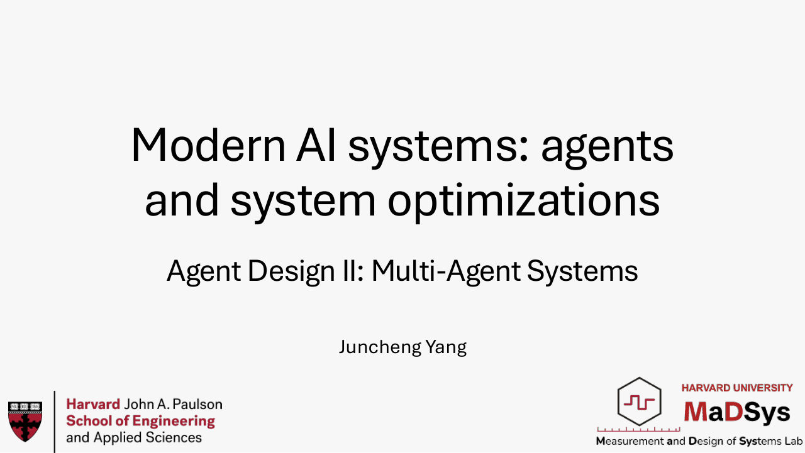
现代 AI 系统：智能体与系统优化
Juncheng Yang
智能体设计 II：多智能体系统
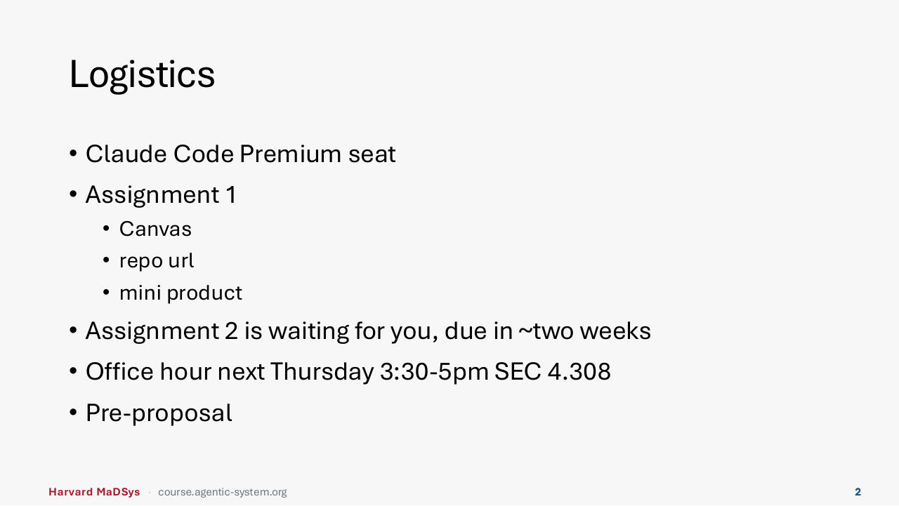
事务安排
- Claude Code Premium 席位
- 作业 1
- Canvas
- 仓库地址
- 迷你产品
- 作业 2 在等你了，约两周后截止
- 下周四答疑：3:30–5pm，SEC 4.308
- 预提案（pre-proposal）
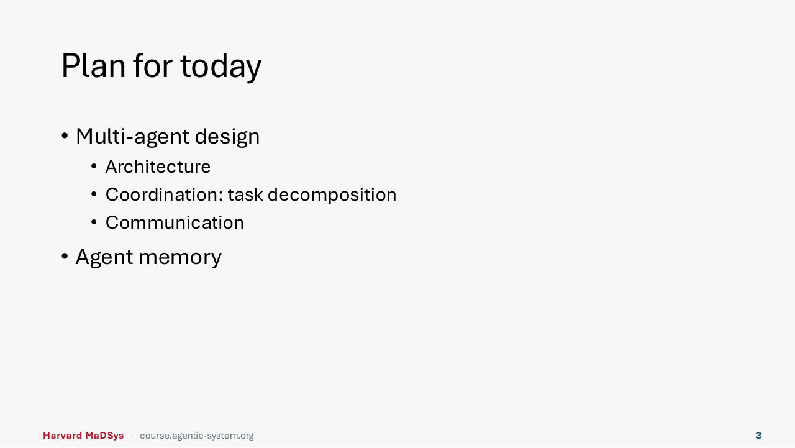
今天的安排
- 多智能体设计
- 架构
- 协调：任务分解
- 通信
- 智能体记忆
（图片页）
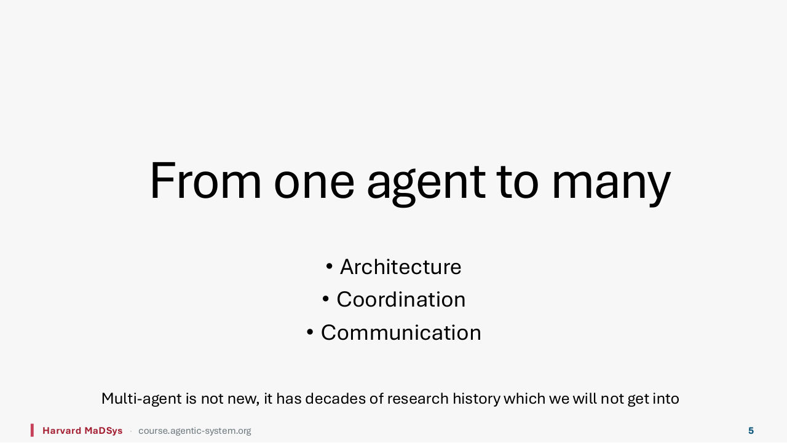
从一个智能体到多个
- 架构
- 协调
- 通信
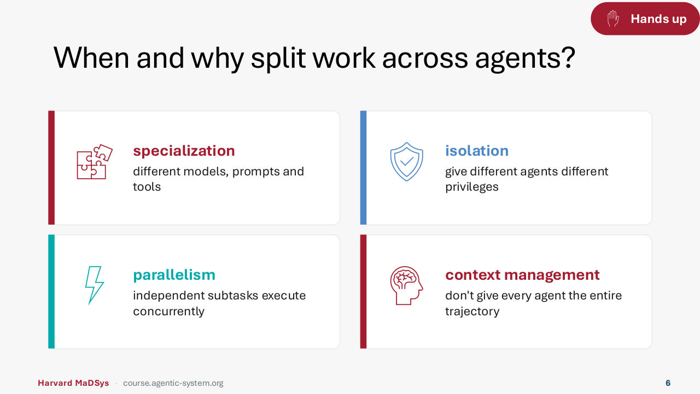
何时、为何把工作分给多个智能体？
- 专业化：不同的模型、提示词和工具
- 隔离：给不同智能体不同的权限
- 并行：相互独立的子任务并发执行
- 上下文管理：不必让每个智能体都看到整条轨迹
举手
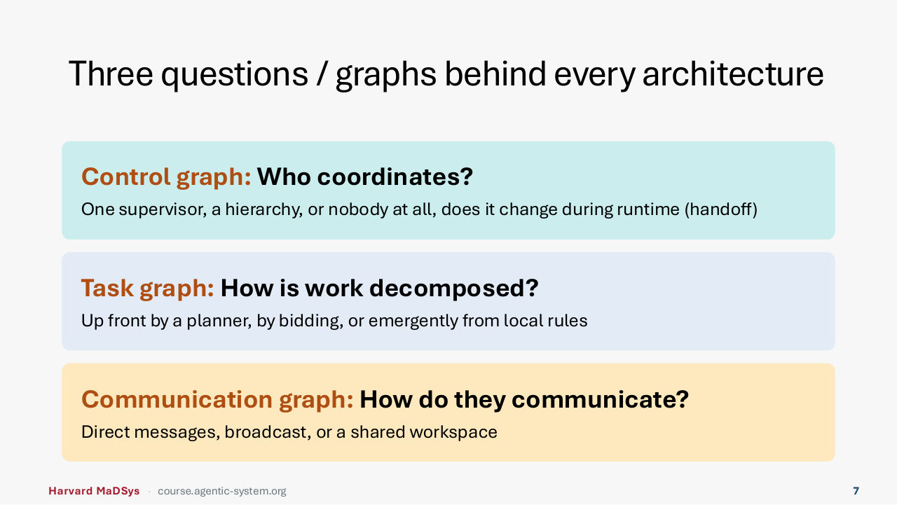
每种架构背后的三个问题 / 三张图
- 控制图：谁来协调？ 一个主管、一套层级，还是根本没有；运行期间是否会变化（交接/handoff）
- 通信图：它们如何通信？ 直接消息、广播，还是共享工作区
- 任务图：工作如何分解？ 由规划者预先分好、通过竞价，还是由局部规则自发涌现
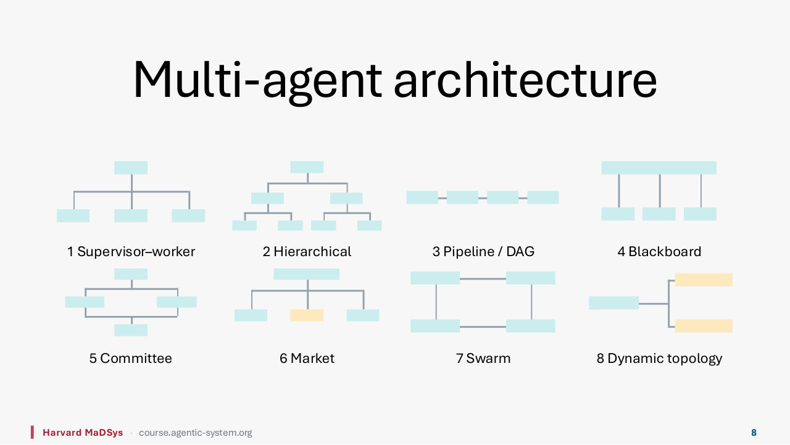
多智能体架构
- 主管—工人（Supervisor–worker）
- 层级式（Hierarchical）
- 流水线 / DAG
- 黑板（Blackboard）
- 委员会（Committee）
- 市场（Market）
- 蜂群（Swarm）
- 动态拓扑（Dynamic topology）
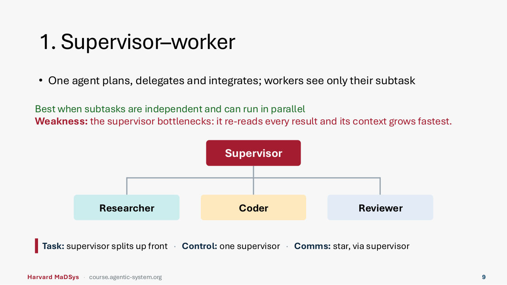
1. 主管—工人
- 一个智能体负责规划、委派和整合；工人只看得到自己的子任务
（图：主管 → 研究员 / 程序员 / 审查员）
- 最适合：子任务相互独立、可以并行运行
- 弱点：主管成为瓶颈——它要重读每一个结果，它的上下文增长最快
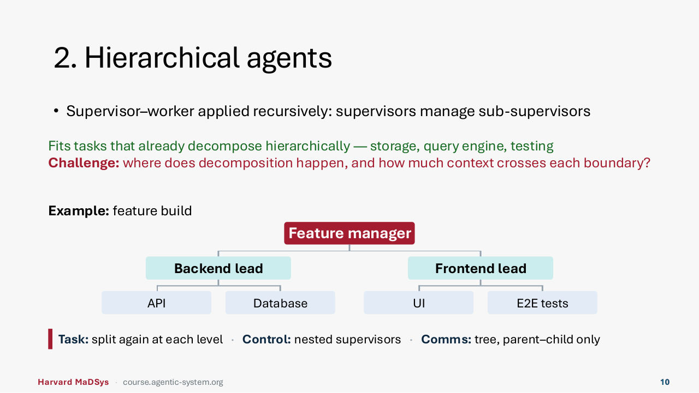
2. 层级式智能体
- 递归地应用主管—工人：主管管理下级主管
- 适合本身就能层级分解的任务——存储、查询引擎、测试
- 挑战：在哪一层做分解？每条边界要传递多少上下文？
示例：功能开发——功能经理 → 后端负责人（API、数据库）/ 前端负责人（UI、端到端测试）
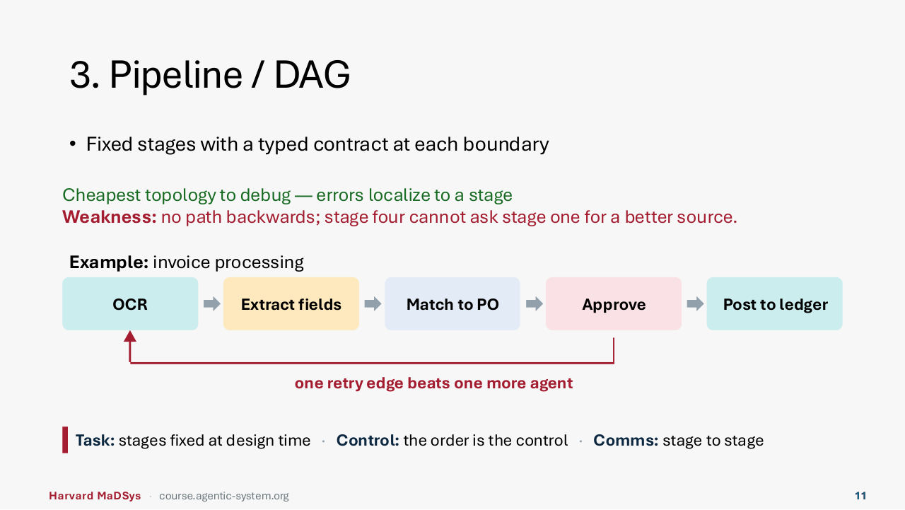
3. 流水线 / DAG
- 固定的阶段，每个边界都有类型化的约定
- 最容易调试的拓扑——错误可以定位到某个阶段
- 弱点：没有回头路；第四阶段无法要求第一阶段提供更好的源数据
示例：发票处理——OCR → 提取字段 → 与采购单匹配 → 审批 → 记入总账
任务：设计时固定阶段 · 控制：顺序本身就是控制 · 通信：阶段到阶段
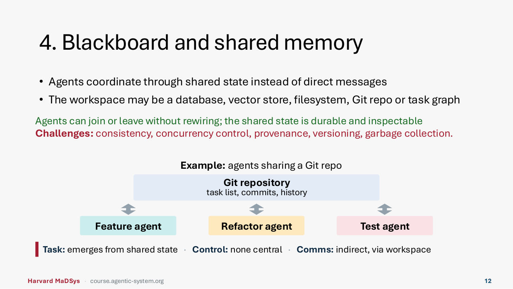
4. 黑板与共享内存
- 智能体通过共享状态而不是直接消息来协调
- 工作区可以是数据库、向量库、文件系统、Git 仓库或任务图
- 智能体可以随时加入或离开而无需重新连线；共享状态持久且可检查
- 挑战：一致性、并发控制、来源追溯、版本管理、垃圾回收
示例：多个智能体共享一个 Git 仓库——功能智能体 / 重构智能体 / 测试智能体 ↔ Git 仓库（任务列表、提交、历史）
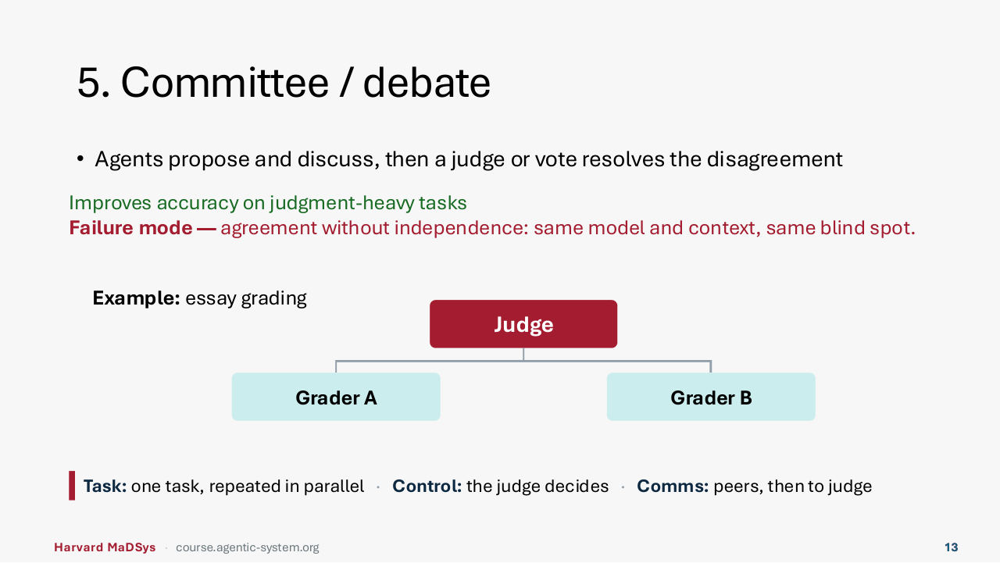
5. 委员会 / 辩论
- 智能体各自提出方案并讨论，然后由评判者或投票解决分歧
示例：作文评分——评分员 A、评分员 B → 评判者
- 在重判断的任务上提升准确率
- 失败模式——没有独立性的一致：同一个模型、同样的上下文，就有同样的盲点
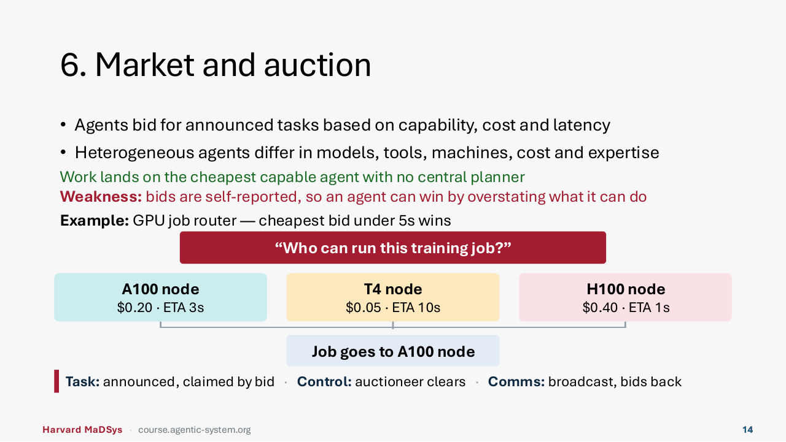
6. 市场与拍卖
- 智能体根据能力、成本和延迟，对公布的任务进行竞价
- 异构智能体在模型、工具、机器、成本和专长上各不相同
示例：GPU 任务路由——5 秒内出价最低者胜出
“谁能运行这个训练任务？”
- A100 节点：$0.20 · 预计 3s
- T4 节点：$0.05 · 预计 10s
- H100 节点：$0.40 · 预计 1s
→ 任务交给 A100 节点
- 工作落到最便宜的有能力的智能体上，无需中央规划者
- 弱点：报价是自报的，智能体可以靠夸大能力来中标
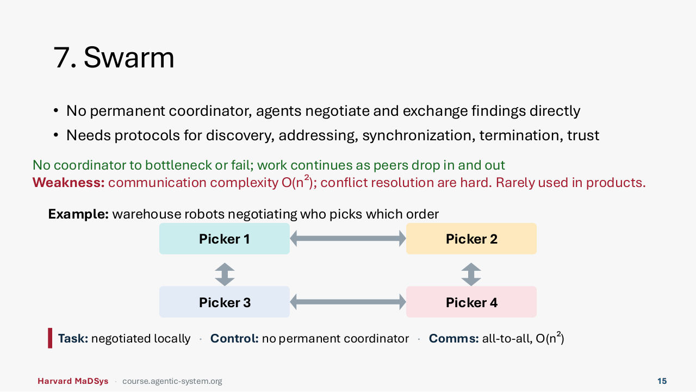
7. 蜂群
- 没有常设协调者，智能体之间直接协商并交换发现
- 需要发现、寻址、同步、终止、信任等协议
示例：仓库机器人协商谁去拣哪张订单（拣货员 1–4）
- 没有会成为瓶颈或宕机的协调者；同伴进进出出，工作照常继续
- 弱点：通信复杂度 O(n²)；冲突解决很难。产品中很少使用。
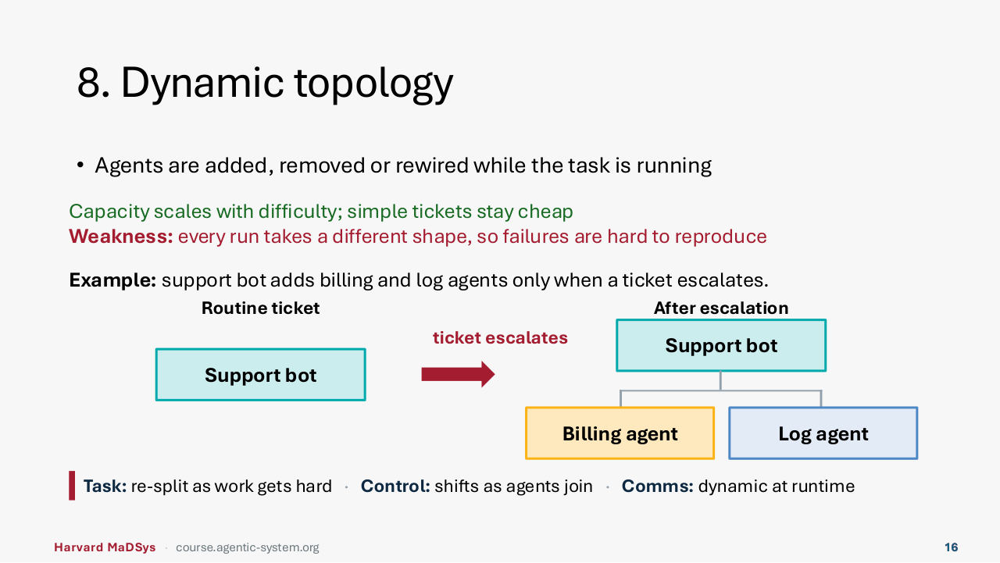
8. 动态拓扑
- 任务运行期间，智能体被添加、移除或重新连线
示例：工单升级时，客服机器人才加入账单智能体和日志智能体
- 常规工单：只有客服机器人
- 升级后：客服机器人 + 账单智能体 + 日志智能体
- 容量随难度伸缩；简单工单保持低成本
- 弱点：每次运行的形态都不同，故障很难复现
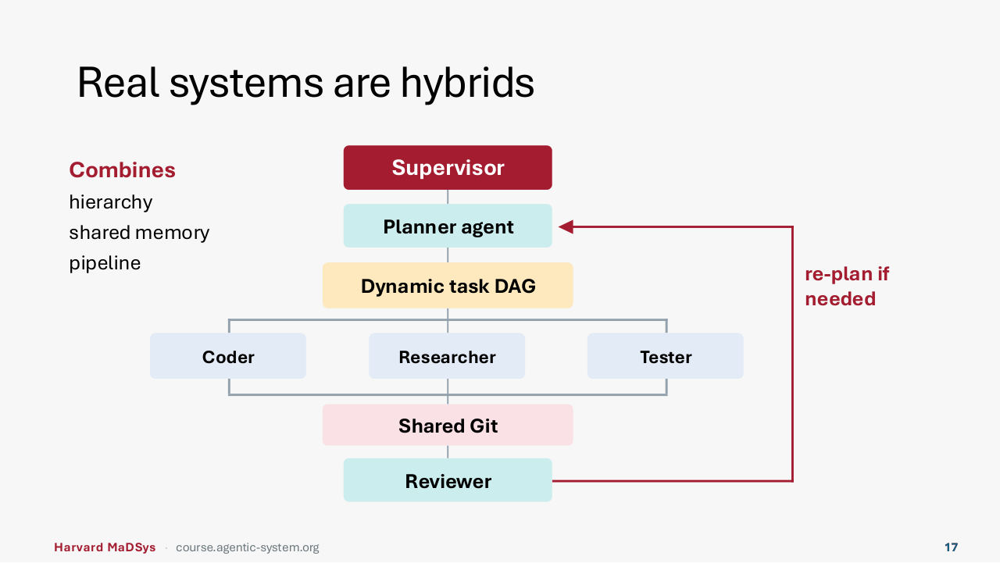
真实系统都是混合体
（图：主管 → 规划智能体 → 动态任务 DAG → 程序员 / 研究员 / 测试员 ↔ 共享 Git → 审查员；必要时重新规划）
组合了：层级 + 共享内存 + 流水线
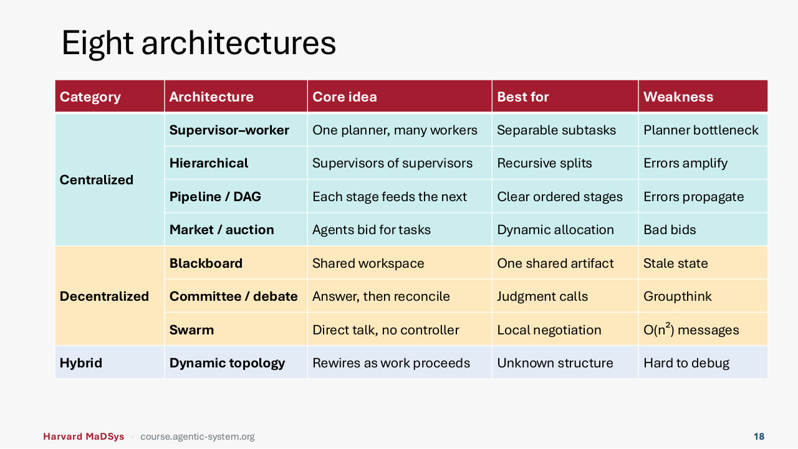
八种架构一览
| 类别 | 架构 | 核心思想 | 最适合 | 弱点 |
|---|---|---|---|---|
| 集中式 | 主管—工人 | 一个规划者，多个工人 | 可分离的子任务 | 规划者瓶颈 |
| 集中式 | 层级式 | 主管的主管 | 递归拆分 | 错误被放大 |
| 集中式 | 流水线 / DAG | 每个阶段喂给下一个 | 清晰有序的阶段 | 错误传播 |
| 集中式 | 市场 / 拍卖 | 智能体竞价领任务 | 动态分配 | 报价失真 |
| 去中心化 | 黑板 | 共享工作区 | 一个共享产物 | 状态过时 |
| 去中心化 | 委员会 / 辩论 | 先作答，再调和 | 需要判断的问题 | 群体思维 |
| 去中心化 | 蜂群 | 直接对话，无控制者 | 局部协商 | O(n²) 消息 |
| 混合 | 动态拓扑 | 随工作推进重新连线 | 结构未知 | 难以调试 |
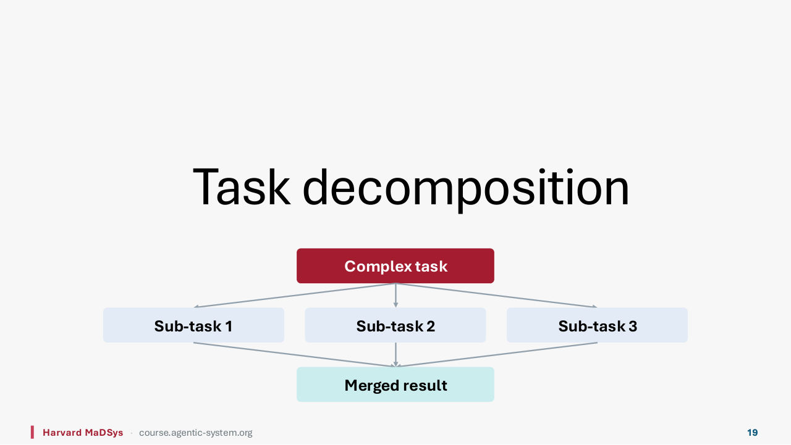
任务分解
复杂任务 → 子任务 1 / 子任务 2 / 子任务 3 → 合并结果
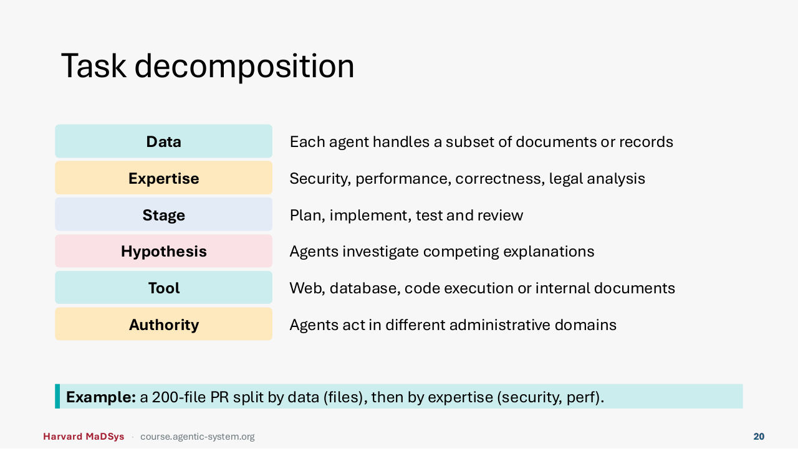
任务分解的维度
- 数据：每个智能体处理一部分文档或记录
- 专长：安全、性能、正确性、法律分析
- 阶段：规划、实现、测试和审查
- 假设：智能体分别调查相互竞争的解释
- 工具：网页、数据库、代码执行或内部文档
- 权限：智能体在不同的管理域中行事
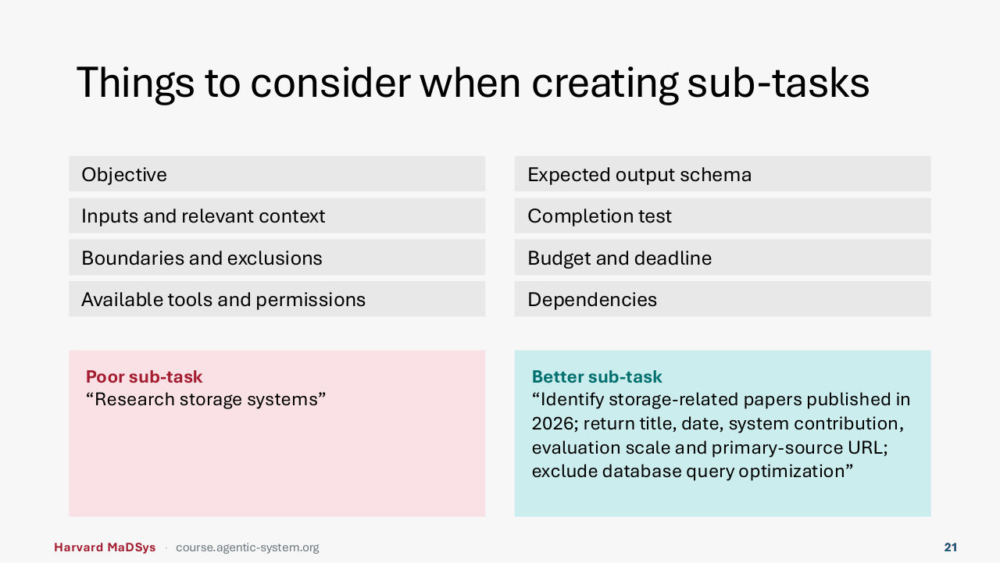
创建子任务时要考虑的事
- 目标
- 输入与相关上下文
- 边界与排除项
- 可用工具与权限
- 期望的输出 schema
- 完成判定
- 预算与截止时间
- 依赖关系
差的子任务：“调研存储系统”
更好的子任务：“找出 2026 年发表的存储相关论文；返回标题、日期、系统贡献、评测规模和一手来源 URL；排除数据库查询优化”
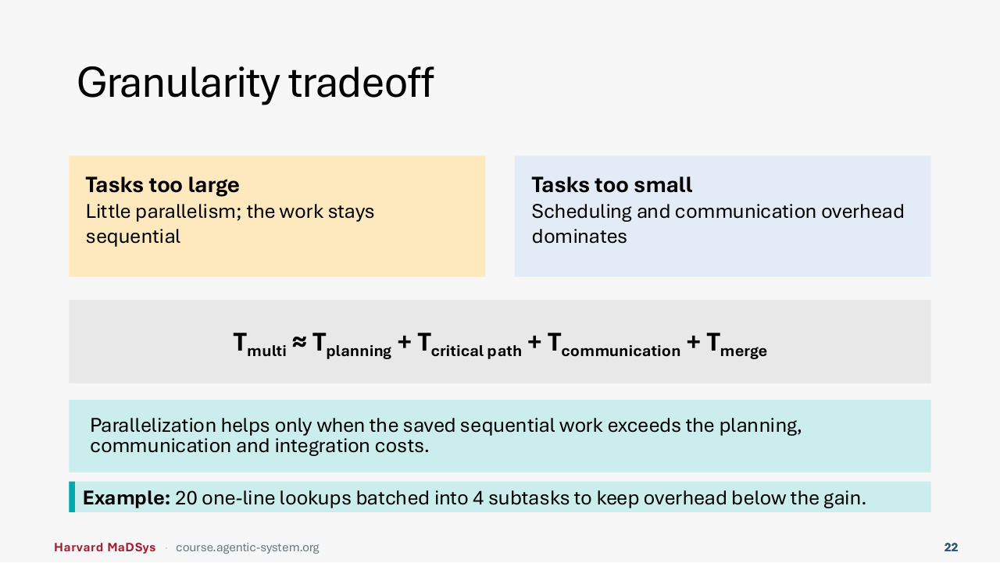
粒度的权衡
- 任务太大：几乎没有并行；工作仍然是串行的
- 任务太小：调度和通信开销占主导
只有当节省下来的串行工作超过规划、通信和整合的成本时，并行化才有帮助。
示例：把 20 个单行查询打包成 4 个子任务，让开销低于收益。
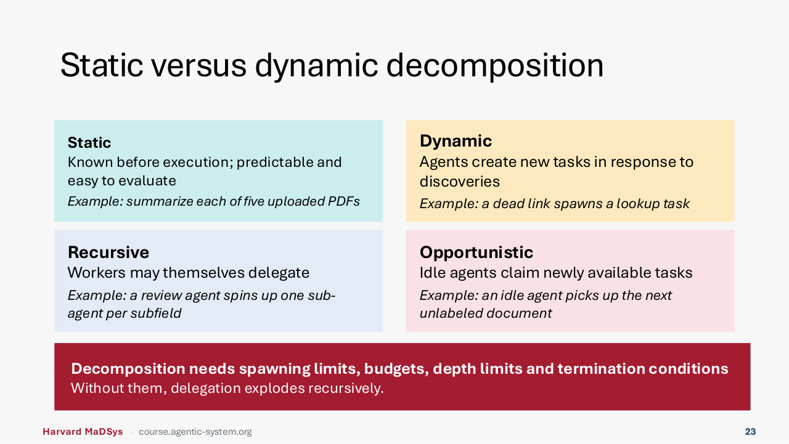
静态分解 vs 动态分解
- 静态：执行前已知；可预测、易评估。例：分别总结上传的五个 PDF
- 动态：智能体根据发现创建新任务。例：发现一个失效链接，就派生一个查找任务
- 递归：工人自己也可以再委派。例：审查智能体为每个子领域启动一个子智能体
- 机会式：空闲的智能体认领新出现的任务。例：空闲智能体领取下一份未标注文档
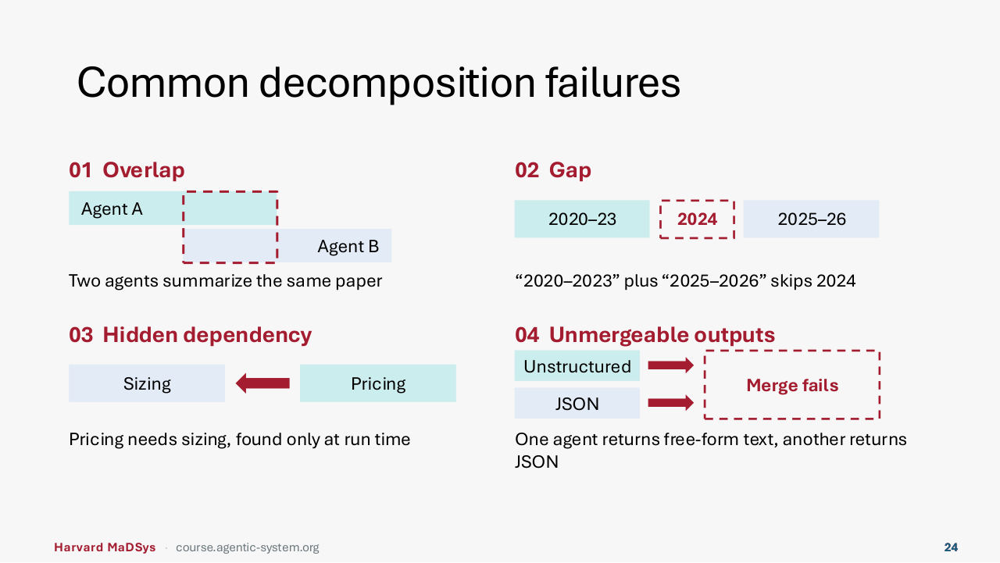
常见的分解失败
- 重叠：两个智能体总结了同一篇论文
- 缺口：“2020–2023”加“2025–2026”，漏掉了 2024
- 隐藏依赖：定价需要先确定规模，而这只在运行时才发现
- 无法合并的输出：一个智能体返回自由文本，另一个返回 JSON → 合并失败
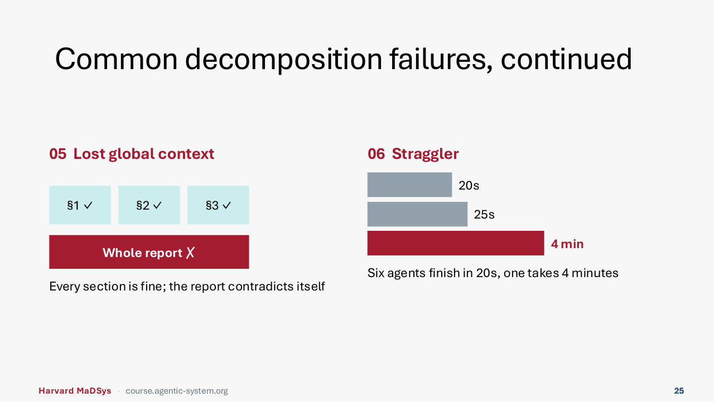
常见的分解失败（续）
- 丢失全局上下文：每一节都没问题；整份报告却自相矛盾
- 掉队者（Straggler）：六个智能体 20 秒完成，一个却要 4 分钟
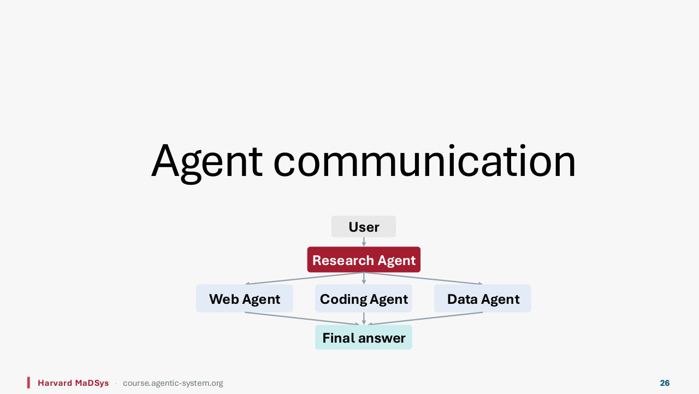
智能体通信
（图：用户 → 研究智能体 ↔ 网页智能体 / 编程智能体 / 数据智能体 → 最终答案）
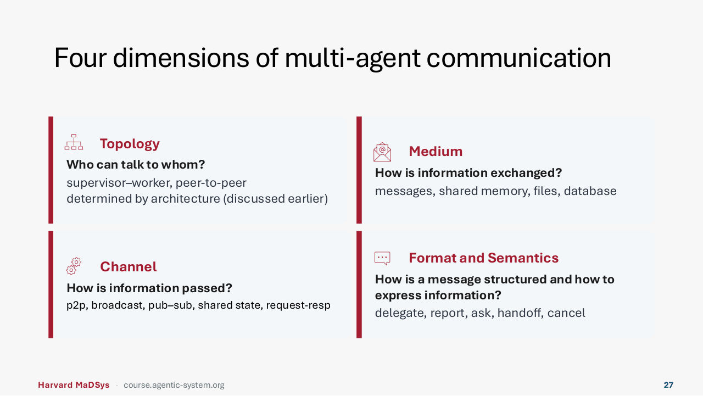
多智能体通信的四个维度
- 拓扑：谁可以和谁对话？主管—工人、点对点——由架构决定（前面已讨论）
- 媒介：信息如何交换？消息、共享内存、文件、数据库
- 格式与语义：消息如何组织、信息如何表达？委派、汇报、询问、交接、取消
- 信道：信息如何传递？点对点、广播、发布—订阅、共享状态、请求—响应
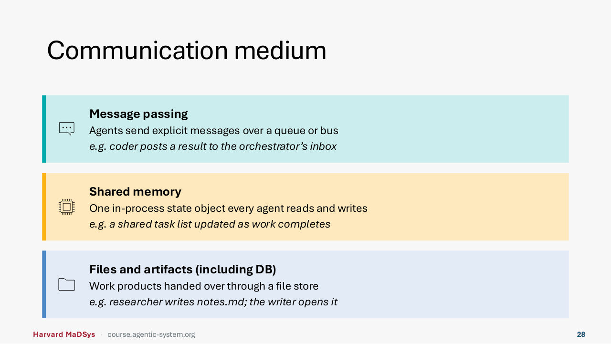
通信媒介
- 消息传递：智能体通过队列或总线发送显式消息。例：程序员智能体把结果投递到编排者的收件箱
- 共享内存：一个所有智能体都读写的进程内状态对象。例：工作完成时更新的共享任务列表
- 文件与产物（包括数据库）：通过文件存储交接工作成果。例：研究员写下 notes.md，撰稿人打开它
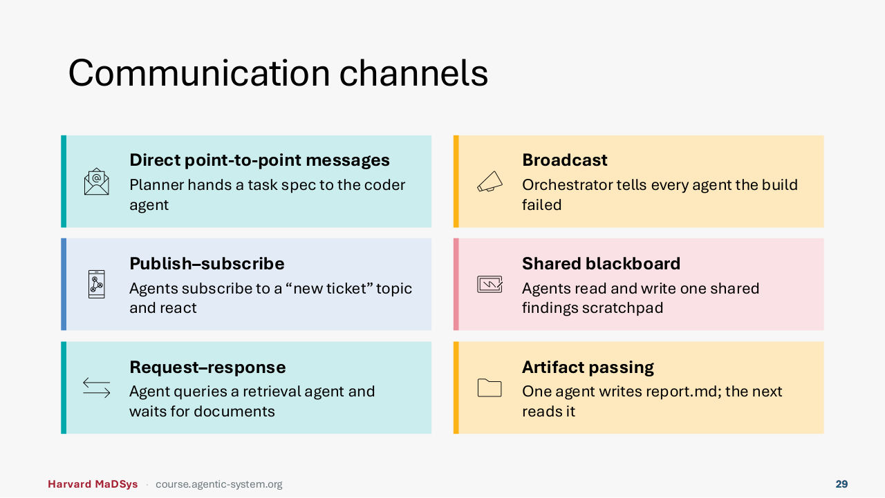
通信信道
- 直接点对点消息：规划者把任务说明交给程序员智能体
- 广播：编排者告诉所有智能体构建失败了
- 发布—订阅：智能体订阅“新工单”主题并作出反应
- 共享黑板：智能体读写同一个共享的发现草稿板
- 请求—响应：智能体查询检索智能体并等待返回文档
- 产物传递：一个智能体写 report.md，下一个读取它
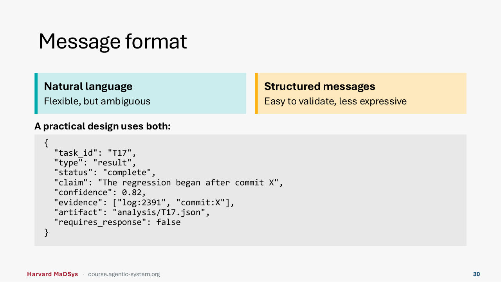
消息格式
- 自然语言：灵活，但有歧义
- 结构化消息：易于校验，但表达力较弱
实用的设计两者兼用：
{
"task_id": "T17",
"type": "result",
"status": "complete",
"claim": "The regression began after commit X",
"confidence": 0.82,
"evidence": ["log:2391", "commit:X"],
"artifact": "analysis/T17.json",
"requires_response": false
}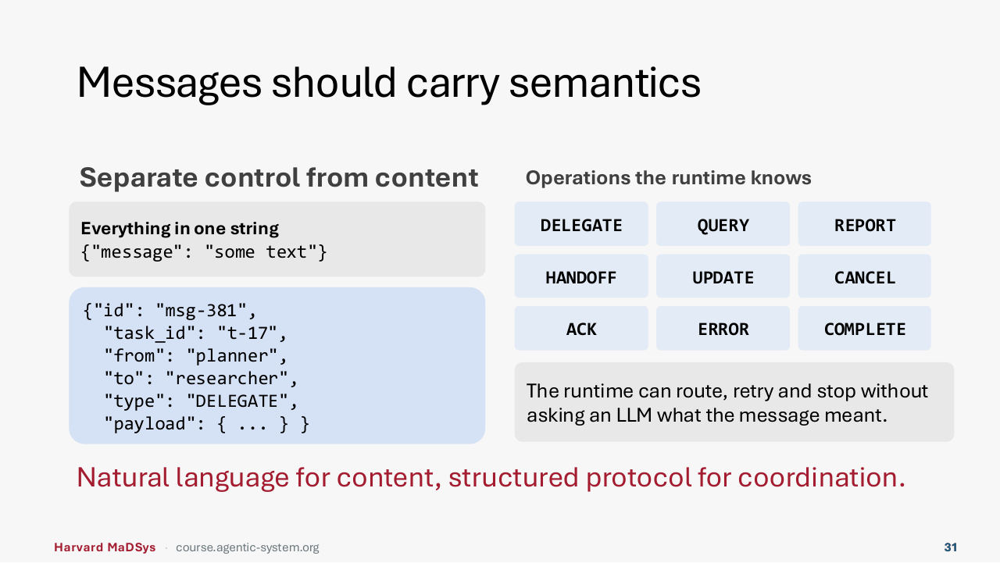
消息应当携带语义
内容用自然语言，协调用结构化协议。
把控制与内容分开
- 反例——一切都塞进一个字符串：
{"message": "some text"} - 正例：
{"id": "msg-381",
"task_id": "t-17",
"from": "planner",
"to": "researcher",
"type": "DELEGATE",
"payload": { ... } }运行时能理解的操作：DELEGATE（委派）、QUERY（查询）、REPORT（汇报）、HANDOFF（交接）、UPDATE（更新）、CANCEL（取消）、ACK（确认）、ERROR（错误）、COMPLETE（完成）
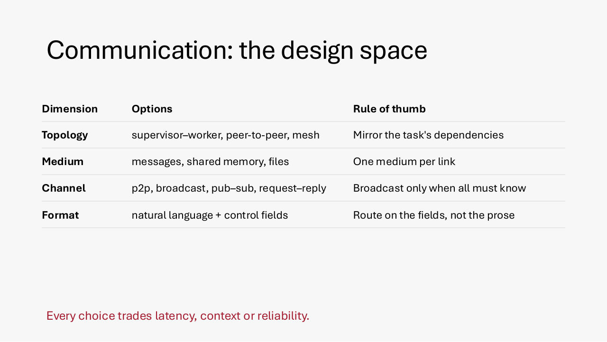
通信：设计空间
| 维度 | 选项 | 经验法则 |
|---|---|---|
| 拓扑 | 主管—工人、点对点、网状 | 镜像任务的依赖关系 |
| 媒介 | 消息、共享内存、文件 | 每条链路一种媒介 |
| 信道 | 点对点、广播、发布—订阅、请求—应答 | 只有所有人都必须知道时才广播 |
| 格式 | 自然语言 + 控制字段 | 按字段路由，而不是按文字 |
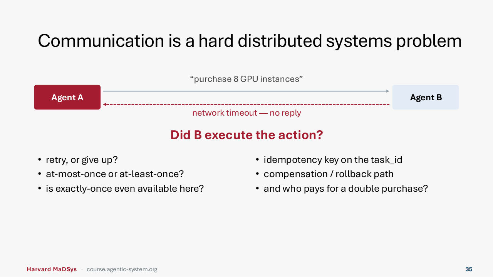
通信是一个困难的分布式系统问题
智能体 A → 智能体 B：“购买 8 个 GPU 实例”——网络超时，没有回复。
B 到底有没有执行？
- 重试，还是放弃？
- 至多一次，还是至少一次？
- 这里能做到恰好一次吗？
- 以 task_id 作为幂等键
- 补偿 / 回滚路径
- 买重了，谁来买单？
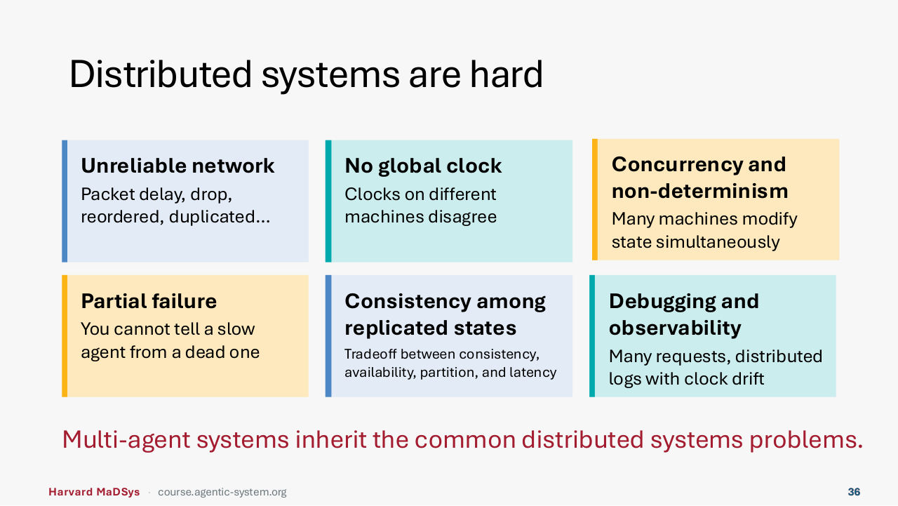
分布式系统很难
- 部分故障：你分不清一个智能体是慢还是死了
- 并发与非确定性：许多机器同时修改状态
- 副本状态之间的一致性：一致性、可用性、分区容忍和延迟之间的权衡
- 没有全局时钟：不同机器的时钟不一致
- 不可靠的网络：数据包延迟、丢失、乱序、重复……
- 调试与可观测性：大量请求，分布式日志还有时钟漂移
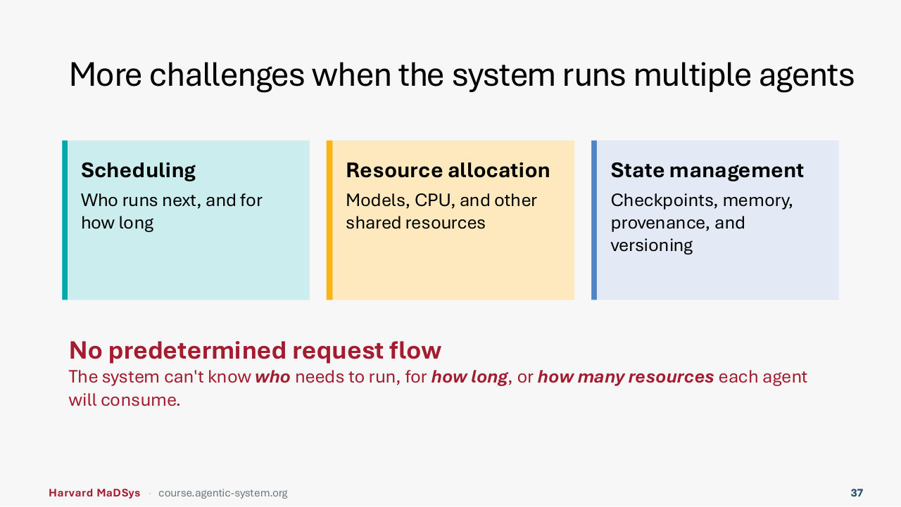
运行多个智能体时还有更多挑战
- 调度：下一个谁运行，运行多久
- 状态管理：检查点、记忆、来源追溯和版本管理
- 资源分配：模型、CPU 和其他共享资源
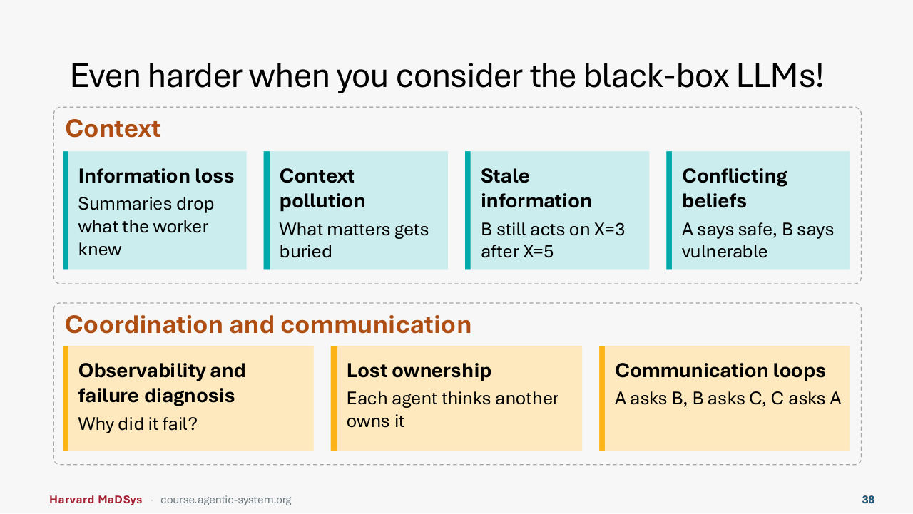
考虑到黑盒 LLM，就更难了！
上下文
- 信息丢失：摘要丢掉了工人所知道的东西
- 上下文污染：重要的内容被埋没
- 过时信息：X 已经变成 5，B 还在按 X=3 行事
- 信念冲突：A 说安全，B 说有漏洞
协调与通信
- 可观测性与故障诊断：为什么失败了？
- 归属丢失：每个智能体都以为是别人负责
- 通信死循环：A 问 B，B 问 C，C 又问 A
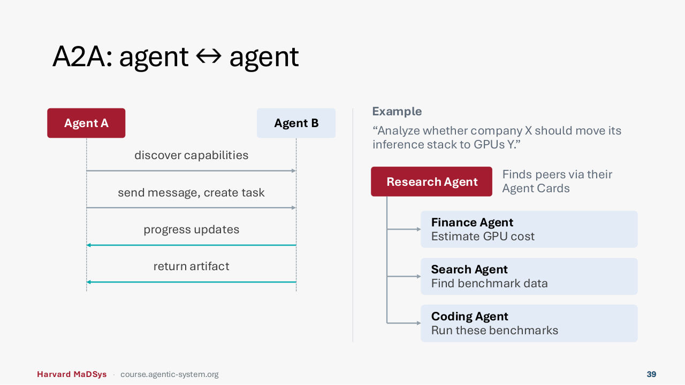
A2A：智能体 ↔ 智能体
智能体 A 与智能体 B 之间：发现能力 → 发送消息、创建任务 → 进度更新 → 返回产物
示例：“分析 X 公司是否应该把推理栈迁移到 Y 型 GPU 上。”
- 研究智能体：通过 Agent Card 找到同伴
- 财务智能体：估算 GPU 成本
- 搜索智能体：查找基准数据
- 编程智能体：运行这些基准测试
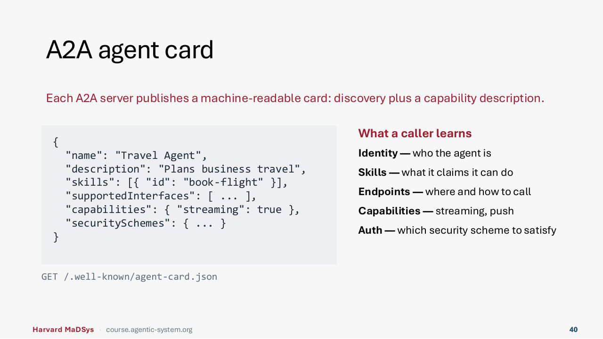
A2A Agent Card
每个 A2A 服务器发布一张机器可读的卡片：用于发现，并描述能力。
GET /.well-known/agent-card.json
{
"name": "Travel Agent",
"description": "Plans business travel",
"skills": [{ "id": "book-flight" }],
"supportedInterfaces": [ ... ],
"capabilities": { "streaming": true },
"securitySchemes": { ... }
}调用方能了解到
- 身份——这个智能体是谁
- 技能——它声称能做什么
- 端点——在哪里、如何调用
- 能力——流式、推送
- 鉴权——需要满足哪种安全方案
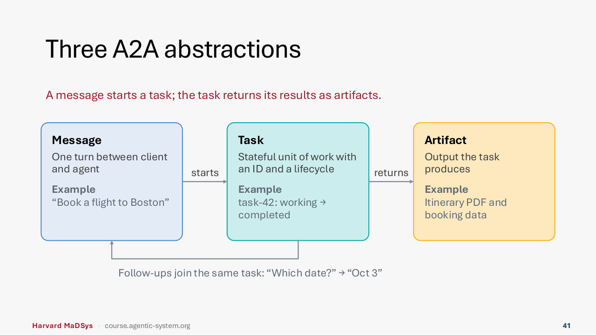
A2A 的三个抽象
一条消息启动一个任务；任务以产物的形式返回结果。
- Message（消息）：客户端与智能体之间的一轮交互。例：“订一张去波士顿的机票”
- Task（任务）：有 ID 和生命周期的有状态工作单元。例：task-42：working → completed
- Artifact（产物）：任务产出的结果。例：行程单 PDF 和预订数据
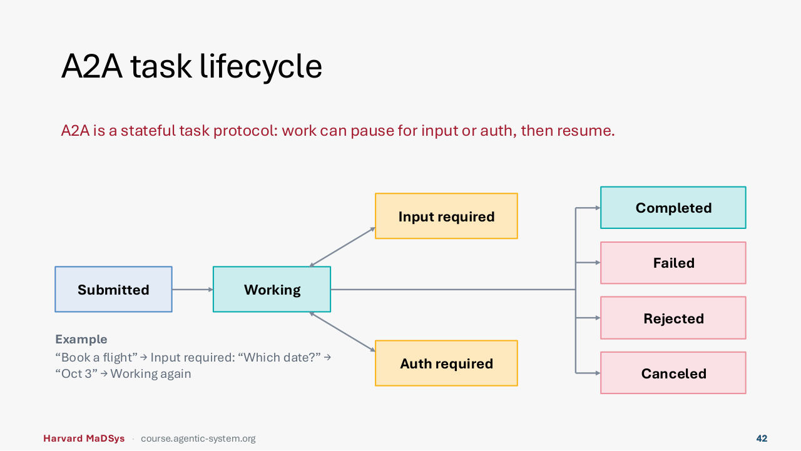
A2A 任务生命周期
A2A 是一个有状态的任务协议：工作可以暂停以等待输入或鉴权，然后继续。
状态：已提交（Submitted）→ 进行中（Working）→ 需要输入（Input required）/ 需要鉴权（Auth required）→ 已完成（Completed）/ 失败（Failed）/ 被拒绝（Rejected）/ 已取消（Canceled）
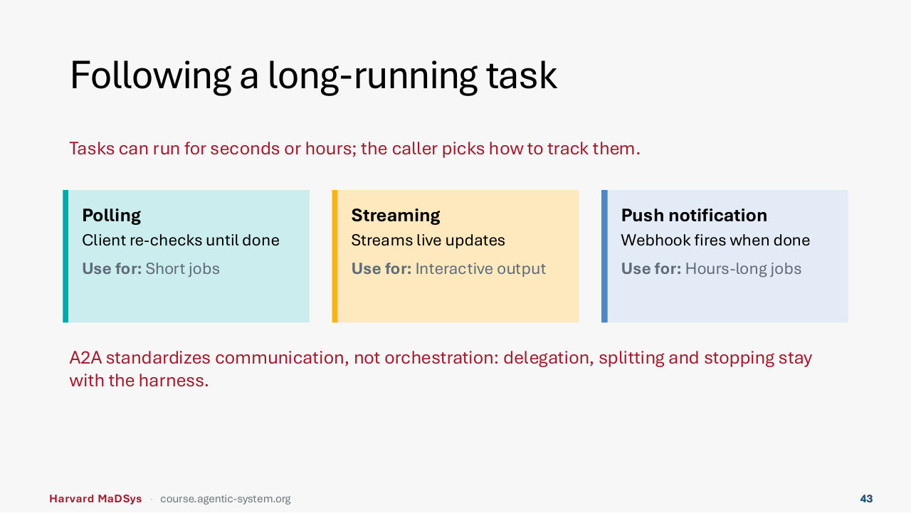
跟踪长时间运行的任务
任务可能运行几秒，也可能几小时；由调用方选择如何跟踪。
- 轮询：客户端反复检查直到完成。适用于：短任务
- 流式：实时推送更新。适用于：交互式输出
- 推送通知：完成时触发 webhook。适用于：耗时数小时的任务
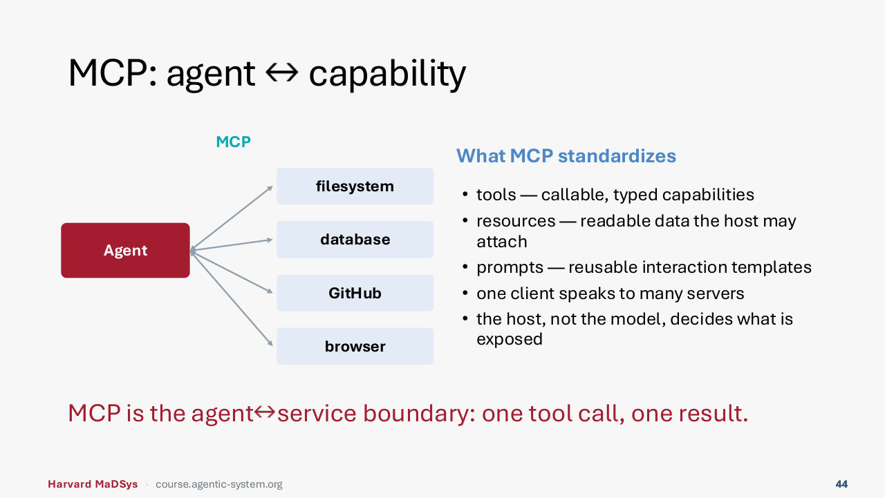
MCP：智能体 ↔ 能力
MCP 是“智能体 ↔ 服务”的边界：一次工具调用，一个结果。
（图：智能体 → MCP → 文件系统 / 数据库 / GitHub / 浏览器）
MCP 标准化了什么
- tools——可调用、有类型的能力
- resources——宿主可以附加的可读数据
- prompts——可复用的交互模板
- 一个客户端可以对接多个服务器
- 由宿主而不是模型决定暴露什么
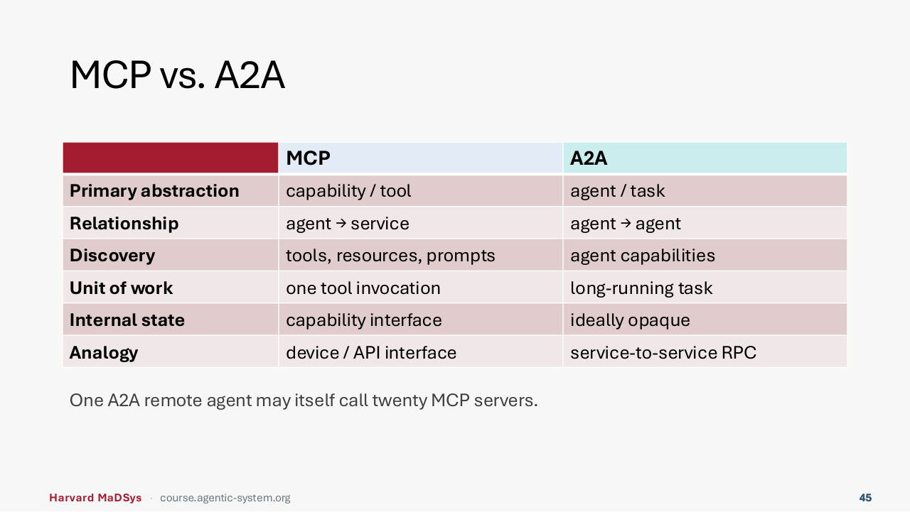
MCP vs A2A
一个 A2A 远程智能体自身可能调用二十个 MCP 服务器。
| MCP | A2A | |
|---|---|---|
| 主要抽象 | 能力 / 工具 | 智能体 / 任务 |
| 关系 | 智能体 → 服务 | 智能体 → 智能体 |
| 发现 | 工具、资源、提示词 | 智能体的能力 |
| 工作单元 | 一次工具调用 | 长时间运行的任务 |
| 内部状态 | 能力接口 | 理想情况下不透明 |
| 类比 | 设备 / API 接口 | 服务间 RPC |
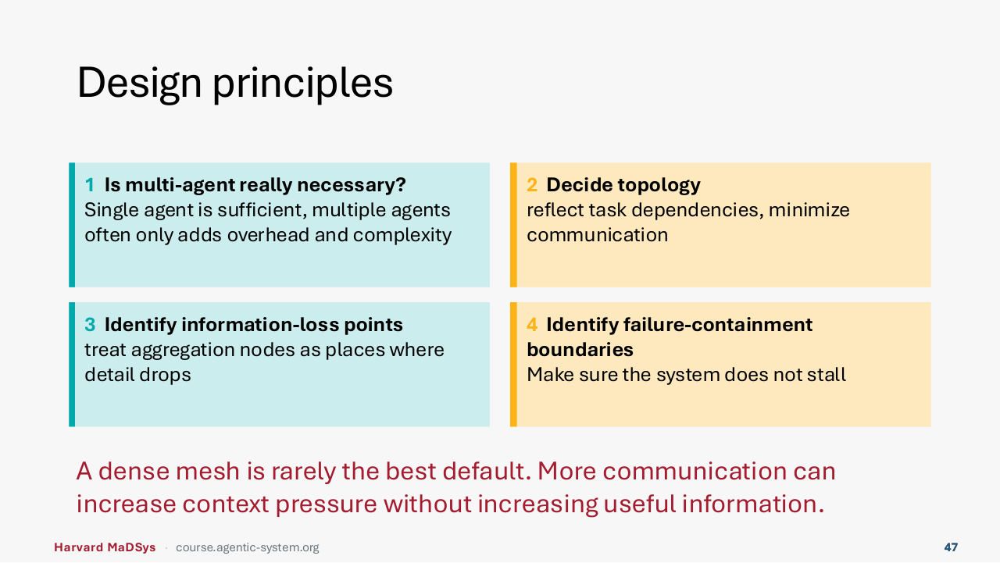
设计原则
- 真的需要多智能体吗？ 单个智能体往往就够了，多智能体常常只会增加开销和复杂度
- 确定拓扑：反映任务依赖，最小化通信
- 找出信息丢失点：把汇聚节点视为细节被丢弃的地方
- 找出故障隔离边界：确保系统不会卡死
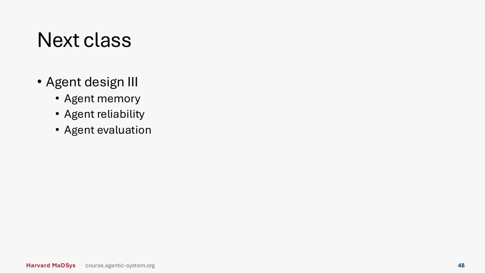
下节课
- 智能体设计 III
- 智能体记忆
- 智能体可靠性
- 智能体评测